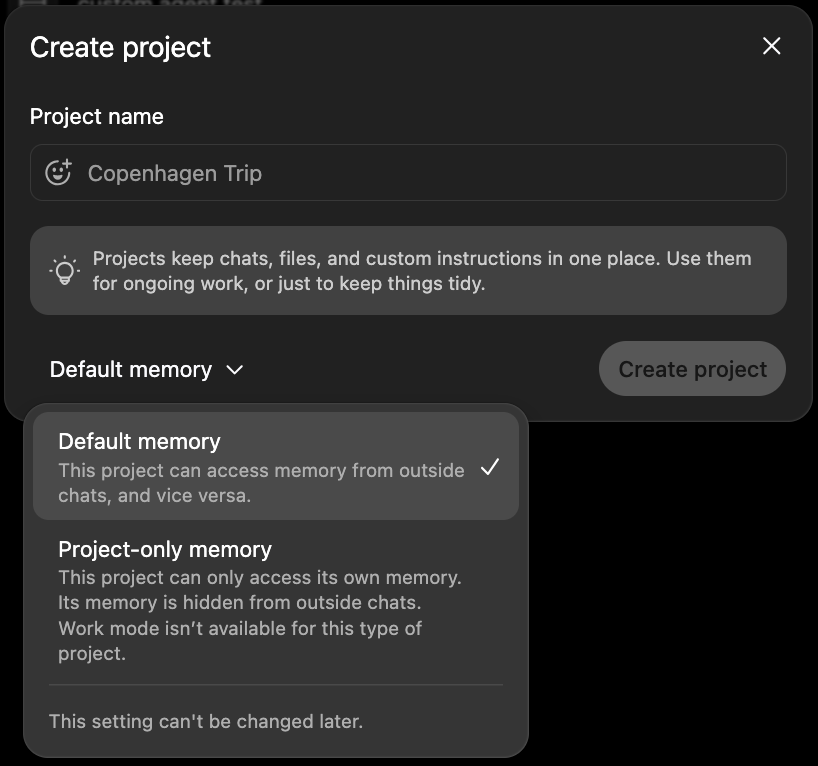
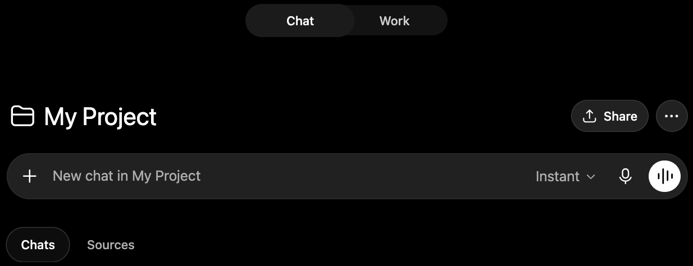

Projects
A Project is a folder that groups related chats, files, and instructions in one place. Use them to organize your chats.
If you're working on a larger project that requires multiple chats, ChatGPT projects are a good way to group them and maintain a shared context.
Creating a project
Open the Projects page from the sidebar and press New.

- Default memory — the project draws from and adds to your personal account memory.
- Project-only memory — the project keeps a separate memory, walled off from other chats outside of the project.
Working inside a project
Select a project from the Projects page to open that project's homepage.

From here, you can start a new chat directly. The slider at the top switches between a Chat and a Work conversation.
To move an existing chat into the project, find it in your recent chats, open its … menu, and choose Move to project.
Project instructions
On a project homepage, open the … menu, then Project settings. In the Instructions box, you can write project-level instructions. These instructions apply to all chats in the project.
For example, you may want to put things like: “always check the pricing doc first” or “raise questions instead of assuming.”
Sources
On a project homepage, the Sources tab lets you attach files specific to the project. Any chat in the project can reference them, so you don't re-upload the same documents each time.
Sharing a project
Press Share on the project's homepage to give others access to the project. They can see all chats and add their own. They can also edit project settings and sources if given permission.
Most importantly, any chats they start from the project will share the project instructions and sources, letting people share chat context.
Shared project chats aren't exactly group chats. Projects are more just for organizing chats and managing a universal context that supports multiple chats.
The real benefit is that a teammate joining the project doesn't have to prime their own ChatGPT from scratch — the instructions and sources are already set up for them.